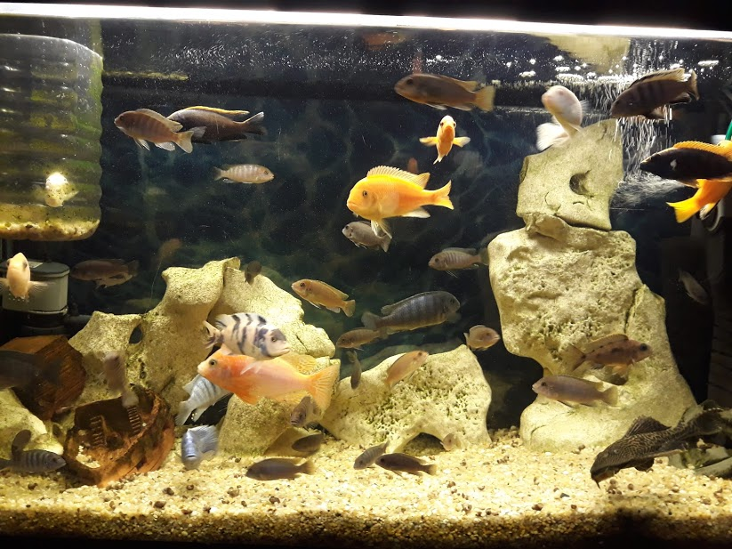

This is our aquarium of 250 liters with Malawian cichlids
LAKE MALAWI CICHLIDS – ONE OF THE MOST FAMOUS FISH SPECIES FOR AQUARIUMS
Lake Malawi cichlids themed aquariums are one of the most beautiful out there. Yet, it is never an easy task to keep a cichlid-themed aquarium. Lake Malawi cichlids prefer highly alkaline water and are aggressive to other fish species. Still, for those who have experience in fish keeping, a cichlid fish tank can be a crown of their hobby.
Subtypes like bumblebee cichlid (Pseudotropheus crabro), golden cichlid (Melanochromis auratus), red zebra cichlid (Maylandia estherae) and blue zebra (Maylandia callainos) usually the best choice for Lake Malawi themed aquarium.